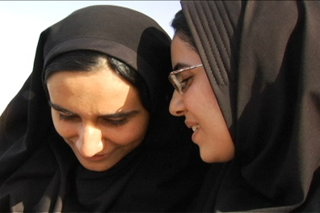

Synopsis
جمهوری جوان

When emerging filmmaker Nooshin Navidi landed in Iran, she expected to find a highly politicized, zealous young population. Instead, she discovered university students like Davood and Nooshin A., who like many students in Iran and America, were striving for success. But as Nooshin stepped through doors and classrooms never entered into by a Westerner, she found more to post-revolution Iran than meets the eye. A new generation stuck between a desire to hold onto their Persian identity and modernize with the latest technologies, and of course, dating.
Reflective and lyrical, YOUNG REPUBLIC engages in dialogues with students and young people. Playful conversations turn to heated debates, and humorous stories lend insight into the how the 'young republic' hopes to shape the future of Iran.
Summary by Arash Saedinia, Visual Communications
Esfahan (or Isfahan) is a splendid place, arguably the most scenic of cities in Iran. Its history spans ages and empires. In Persian, there is the saying, “Esfahan nesfe jahan ast.” That is, “Esfahan is half of the world.” Nooshin Navidi’s “Young Republic” examines the lives of youths in Esfahan. The film calls attention to the fact that the majority of the Iranian population is under thirty. Navidi, an American of Iranian and Korean descent, focuses on students at the Isfahan University of Technology. Like most kids anywhere, these students dig fast food, pop culture, mobile technology. They are earnest, determined to succeed, find well paying jobs, forge meaningful careers. Unlike many of their peers in the world, they face government imposed gender segregation in social spaces such as cafes. Women adhere to strict dress codes. Religious codes and censorship are pervasive; so too are popular movies, music, the internet. As a professor at the university put its, “Our society is changing very, very fast. There are a lot of contradictions… Our youth are confused.”
These students love Persian Culture and are quick to defend Iran as a nation but are obviously under enormous pressure to conform. They take pains to carefully lament Iran’s isolation in the global political sphere and its effects on the quality of their lives. They admire the West and are obsessed with American Culture but are critical of American Foreign Policy and sensitive to misrepresentations of Iran in the U.S. Navidi affords us a glimpse at young men and women making the best of difficult circumstances and enriches our understanding of present day life in the Islamic Republic of Iran.